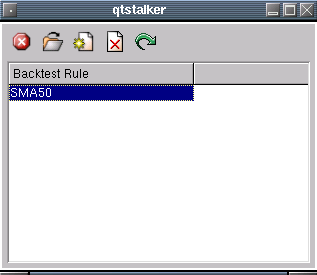

The work with backtest dialog allows you to open, edit, delete, backtesting
rules. A backtesting rule is a collection of indicators and stops used to
perform trades based on real chart data. The results are then recorded,
listed and graphed for you. The purpose is to allow you to test "what if"
ideas without risking real money.
Here is a shot of the dialog.

The button functions are as follows:
This exits the dialog.
Permanently delete the backtest rule selected.